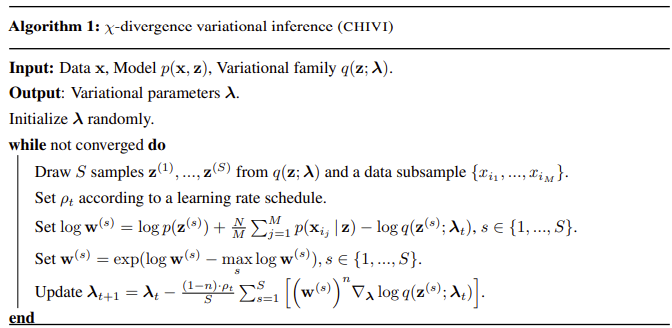

Note: I’ve gotten a lot more pessimistic about how generally useful the alternatives to simple KL-Divergence are on their own since writing this post. I still think these are really useful ideas to think to build intuition about VI, and techniques like CHIVI are useful for some lower dimensional problems or as part of an ensemble of techniques for high dimensional ones. However, this paper from Dhaka et al. is very convincing that CHIVI and currently available similar algorithms are in practice very hard to optimize for high dimensional posteriors, and that some of the intuitive benefits shown about CHIVI below in low dimensions don’t really generalize the way we’d expect to higher dimensions.
This is section 3 in my series on using Variational Inference to speed up relatively complex Bayesian models like Multilevel Regression and Poststratification without the approximation being of disastrously poor quality.
In the last post we threw caution to the wind, and tried out some simple variational inference implementations, to build up some intuition about what bad VI might look like. Just pulling a simple variational inference implementation off the shelf and whacking run perhaps unsurprisingly produced dubious models, so in this post we’ll bring in long overdue theory to understand why VI is so difficult, and what we can do about it.
The general structure for the next couple of posts will be to describe a problem with VI, and then describe how that problem can be fixed to some degree. Collectively, all the small improvements in the next three posts will go a long way towards more robust variational inference. I’ll also have a grab bag at the end of other interesting ideas from the literature I think are cool, but maybe not as important or interesting to me as the 3 below.
The rough plan for the series is as follows:
Introducing the Problem- Why is VI useful, why VI can produce spherical cows
How far does iteration on classic VI algorithms like mean-field and full-rank get us?
(This post) Problem 1: KL-D prefers exclusive solutions; are there alternatives?
Problem 2: Not all samples are of equal utility; can we weight them cleverly?
Problem 3: How can we know when VI is wrong? Are there useful error bounds?
Better grounded diagnostics and workflow
Seeing if some more sophisticated techniques like normalizing flows add much
Inclusive versus Exclusive KL-divergence
Like I mentioned in the first post in the series, the Evidence Lower Bound (ELBO), our optimization objective we’re working with is a tractable approximation of the Kullback-Leibler Divergence between our choice of approximating distribution q(z) to our true posterior p(z).
The KL divergence is asymmetric: in general, KL(p||q) \neq KL(q||p). Previously, we saw that this asymmetry mattered quite a bit for our ELBO idea:
argmin_{q(z) \in \mathscr{Q}}(q(z)||\frac{p(z,x)}{\bf p(x)}) = \mathbb{E}[logq(z)] - \mathbb{E}[logp(z,x)] + {\bf logp(x)} We can’t calculate the bolded term logp(x); if we could we wouldn’t be finding this inference thing so hard in the first place. The way we sidestepped that with the ELBO is to note that the term is constant with respect to q; so we can go on our merry way minimizing the above without it.
If we flip the divergence around though, we’ve got an issue. That term would then be a logq(x) … which we can’t write off in the same way- it varies as we optimize. So if we’re doing this ELBO minimizing version of variational inference, we’re obligated to use this “reverse” KL divergence, the second option below.
Unfortunately, this choice to optimize the “reverse” KL divergence bakes in preference for a certain type of solution1.
I found I built better intuition for this encoded preference after seeing it presented many different overlapping ways, so here are a few of my favorites.
One way to see the difference is through a variety of labels for each direction. One could call Forward KL (1) vs. Reverse KL (2):
Inclusive vs. Exclusive (my favorite, and so what I’m using for the section header)
Mean Seeking vs. Mode Seeking
Zero Avoiding vs. Zero Forcing
let’s quickly sketch what this might look like in the case of a simple mixture of normals with a single normal as a variational family:
library(ggplot2)
Warning: package 'ggplot2' was built under R version 4.2.3
library(gridExtra)library(tidyverse)
Warning: package 'tidyverse' was built under R version 4.2.3
Warning: package 'tibble' was built under R version 4.2.3
Warning: package 'tidyr' was built under R version 4.2.3
Warning: package 'readr' was built under R version 4.2.3
Warning: package 'purrr' was built under R version 4.2.3
Warning: package 'dplyr' was built under R version 4.2.3
Warning: package 'stringr' was built under R version 4.2.3
Warning: package 'forcats' was built under R version 4.2.3
Warning: package 'lubridate' was built under R version 4.2.3
To approximate the same exact red distribution p(x), Inclusive KL (1) and Exclusive KL (2) would optimize the green q(p) in quite different manner.
To spell out the ways to describe this above: Inclusive KL will try to cover all the probability mass in p(x), even if it means a peak at a unfortunate middle ground. Exclusive KL, on the other hand, will try to concentrate it’s mass on the largest mode, even if it means missing much of the mixture of normals. Alternatively, we could describe the top graph as mode seeking, and the bottom as mean seeking. Finally, we could say the top graph shows “Zero Forcing” behavior- it will heavily favor putting zero mass on some parts of the graph to avoid any weight where p(x) has no mass, even if it means missing an entire mode. Conversely, Inclusive KL will aim to cover all the mass of p(x) in full even if the result is an odd solution, in order to avoid having zero mass where p(x) has some.
How does this follow from the form of the divergence?
To start with, notice that for inclusive KL we could think of the log(\frac{p(x)}{q(x)}) part of the term being weighted by p(x)- if in some range of xp(x) is 0, we don’t pay a penalty if q(x) puts mass. The reverse is not true however- if our q(x) is zero where there should be mass in our true distribution, our Inclusive KL divergence is infinite2.
And if we change the direction of the divergence, the opposite zeros and infinities show up, enforcing strong preferences for a specific type of solution.
When the example is a simple mix of two gaussians approximated with a single gaussian, it’s fairly easy to intuit how the choice of KL divergence will influence the optimization solution. This all gets a bit more opaque on harder problems- like we saw with the example last post, ELBO based VI will tend to underestimate the support of p(x) but whether the solution is narrow but overall reasonable, or pretty much degenerate, is hard to predict. However, this exploration of how the form of the divergence influences the results still gives a rough intuition for why our ELBO optimized posteriors might collapse.
If we want to try the opposite direction of KL divergence, it isn’t immediately obvious there’s a global objective we can choose that favors overdispersed solutions. Like I mentioned above, if we try to make an ELBO-esque target but reverse the KL divergence, the logp(x) which is constant with respect to the q(x) we’re optimizing becomes a logq(x) which we can’t so easily work around.
Let’s look first at a solution in the spirit of VI3 to the above problem which requires us to pick up a new divergence, the \chi^{2}-divergence, and optimizes a new bound. Let’s take a look at it.
\chi^{2} Variational Inference (CHIVI) and the CUBO bound
The \chi^{2}-divergence has form:
D_{\chi^2}(p||q) = \mathbb{E}_{q(z;\lambda)}[(\frac{p(z|x)}{q(z;\lambda)})^2 -1]
For simplicity and comparability, I’m switching here to using Dieng et Al. (2017)’s notation here- they use q(z;\lambda) to refer to the variational family we’re using, indexed by parameters \lambda.
This divergence has the properties we wanted when we tried to use Inclusive KL Divergence- it tends to be mean seeking instead of mode seeking.
Like with the ELBO, we need to show that we have a bound here independent of logp(x), and that we have a way to estimate that bound efficiently.
Let’s first move around a few pieces of the first term above:
\begin{align}
\mathbb{E}_{q(z;\lambda)}[(\frac{p(z|x)}{q(z;\lambda)})^2& = 1 + D_{\chi^2}(p(z|x)|q(z;\lambda)) \\
&= p(x)^2[1 + D_{\chi^2}(p(z|x)|q(z;\lambda))]
\end{align}
Then we can take the log of both sides of the equation, which gives us:
\frac{1}{2}log(1 + D_{\chi^2}(p(z|x)|q(z;\lambda))) = -logp(x) + \frac{1}{2}log\mathbb{E}_{q(z;\lambda)}[(\frac{p(z|x)}{q(z;\lambda)})^2]
…and this is starting to feel a lot like the ELBO derivation. Log is monotonic, and the -logp(x) term is constant as we optimize q, so we’ve found something that we’re close to able to minimize:
CUBO_{2}(\lambda) = \frac{1}{2}log\mathbb{E}_{q(z;\lambda)}[(\frac{p(z|x)}{q(z;\lambda)})^2]
Since this new divergence is non-negative as well, this is a upper bound of the model evidence. This is thus named \chi upper bound (CUBO)4.
… But can we estimate it?
One other issue here: how do we estimate this? The CUBO objective got rid of the logp(x) we were worried about, but it seems like that expectation is going to be difficult to estimate in general.
Your first idea might be to Monte Carlo (not MCMC) estimate it roughly like this:
CUBO_2(\lambda) = \frac{1}{2}log\frac{1}{S}\sum_{s=1}^{S}[(\frac{p(x,z^{s})}{q(z^{s};\lambda)})^2]
Unfortunately, the log transform here means our Monte Carlo estimator will be biased: we can see this by applying Jensen’s inequality to the above. To make this stably act as an upper bound, we can apply a clever transformation:
\bf{L} = exp(n* CUBO_2(\lambda))
Since exp is monotonic, this has the same objective as the CUBO, but we can Monte Carlo estimate it unbiasedly. Is that the last problem to solve?
… But can we calculate gradients efficiently?
Wait, wait no. Sorry to keep saying there’s one more step here, but there’s a lot that goes into making a full, convenient, general use algorithm here. The last step (for real this time) is that we need to figure out how to get gradients for the estimate of \bf{L} above, \bf{\hat{L}}. The issue is that we don’t have any guarantee that a unbiased Monte Carlo estimator of \bf{\hat{L}} gets us a Monte Carlo way to estimate \nabla_\lambda\bf{\hat{L}}- we can’t guarantee that the gradient of the expectation is equal to the expectation of the gradient.
For this, we need to pull out a trick from the variational autoencoder literature. This is usually referred to as the “Reparameterization Trick”5, but the original CHIVI paper refers to them as “reparmeterization gradients”. We will assume we can rewrite the generative process of our model as z = g(\lambda,\epsilon), where \epsilon \sim p(\epsilon) and g being a deterministic function. Then we have a new estimator for both \bf{\hat{L}} and it’s gradient:
\begin{align}
\bf{\hat{L}} &= \frac{1}{B}\sum_{b=1}^B(\frac{p(x,g(\lambda,\epsilon^{(b)}))}{q(g(\lambda,\epsilon^{(b)};\lambda))})^{2} \\
\nabla_\lambda\bf{\hat{L}} &= \frac{2}{B}\sum_{b=1}^B(\frac{p(x,g(\lambda,\epsilon^{(b)}))}{q(g(\lambda,\epsilon^{(b)};\lambda))})^2 \nabla_\lambda log(\frac{p(x,g(\lambda,\epsilon^{(b)}))}{q(g(\lambda,\epsilon^{(b)};\lambda))})
\end{align}
There are one or two more neat computational tricks in the paper I won’t explain here (essentially: how do we extend this to work in minibatch fashion, and how do we avoid numerical underflow issues), but this is now essentially functional. The whole algorithm, which they dubbed CHIVI is below:

The Bigger Picture Again
Stepping back, let’s talk about some practical properties of the algorithm we’ve been stepping through.
First, and probably most exciting given what we saw in the last post, CHIVI’s objective has the property that it is inclusive, unlike the ELBO we were using earlier. This won’t be the right choice for all variational inference problems, but given our prior issues with very narrow posteriors this will be exciting to test6. And as we’ll see in the next section, this overdispersion tendency in the posterior will often have a beneficial interaction with importance sampling which can improve our estimates further.
Another nice thing here is that if we were to estimate both the ELBO and CUBO for a given problem, we’d get both a upper and lower bound on the model evidence. This is theoretically convenient in that we now have a sandwich estimator, which actually obtains reasonably tight bounds. We’ll even be able use the fact we have both later to get some bounds on practical bounds on quantities we tend to report in practice like means and covariances!
A final neat benefit here is that to the extent we are willing to consider ensembling models (again, more on that soon), this CHIVI framework will produce estimates that succeed (and fail) in less similar ways that the the ELBO based estimators we looked at last post. Expanding our available set of tools is always good, but it’s even better when we’re ensembling because we can lean more heavily on each model for the tasks it succeeds on.
One potential downside here is that we introduced a solution that partially relies on a Monte Carlo estimator. That said, this is pretty cheap in practice; if we’re using VI as a drop in for MCMC, this is still going to be much much faster than MCMC for any big problem. We’ll need to think about a reasonable number of samples in a given case, but realistically this isn’t going to be a driving factor in determining compute time.
Another final problem is that the estimator we built out for the CUBO that we could actually estimate tends to end up having pretty high variance. Exponentiating the objective isn’t free in that sense; but this problem of variance reduction in estimators is something that feels like a tractable problem to iterate on.
Footnotes
In truth, both KL divergences encode structural preferences for the type of optimization solution they admit- neither will be the right choice for every problem and variational family combination. But as we’ll see, being able to choose will give us more options to fit models we believe.↩︎
This is the footnote for those of you that are annoyed because you tried to write out how this would happen, and got something like p(x) log \frac{p(x)}{0}, which should be undefined if we’re following normal math rules. But this is information theory, and in this strange land we say p(x) log \frac{p(x)}{0} = \infty. I don’t have a strong intuition for why this is the best solution, but a information encoding perspective makes it make more sense at least: if we know the distribution of p, we can construct a code for it with average description length H(x). One way to understand the KL divergence is as what happens when we try to use the code for a distribution q to describe p, we’d need H(p) + KL(p||q) bits on average to describe p. In the code for q has no way to represent some element of p, then requiring… infinite bits feels like the right way to describe the breakdown of meaning? All this to say this condition is something our optimizer will try hard to avoid.↩︎
I’ll mention an alternative approach, Expectation Propagation, that takes a different (not global objective based) approach further down.↩︎
This approach actually defines a family of n new divergences, where you replace the \frac{1}{2} with \frac{1}{n} and similarly replace the square an exponent with n. Fully stepping through why this is neat wasn’t worth how far afield it’d take us, but the original CHIVI paper has some cool derivations based on this, one of which I’ll discuss on the next section on importance sampling.↩︎
I thought about a section to explain the reparameterization trick, but there are enough good explanations online of the trick. If you’re interested in learning more about why this is important for optimization through stocastic models, I’d recommend starting with Gregory Gundersen’s explanation here and then move on to the original Kingma & Welling, 2013 paper. As general advice on understanding it better though, I’ll echo Greg’s point that some of the online explanations I’ve seen are a bit loose- the key is that we want to express a gradient of an expectation (can’t MC estimate for sure) as an expectation of a gradient (which we can MC estimate provided our convenient deterministic function g is differentiable).↩︎